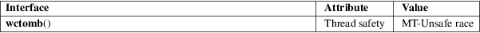

wctomb − convert a wide character to a multibyte sequence
Standard C library (libc, −lc)
#include <stdlib.h>
int wctomb(char *s, wchar_t wc);
If s is not NULL, the wctomb() function converts the wide character wc to its multibyte representation and stores it at the beginning of the character array pointed to by s. It updates the shift state, which is stored in a static anonymous variable known only to the wctomb() function, and returns the length of said multibyte representation, that is, the number of bytes written at s.
The programmer must ensure that there is room for at least MB_CUR_MAX bytes at s.
If s is NULL, the wctomb() function resets the shift state, known only to this function, to the initial state, and returns nonzero if the encoding has nontrivial shift state, or zero if the encoding is stateless.
If s is not NULL, the wctomb() function returns the number of bytes that have been written to the byte array at s. If wc can not be represented as a multibyte sequence (according to the current locale), −1 is returned.
If s is NULL, the wctomb() function returns nonzero if the encoding has nontrivial shift state, or zero if the encoding is stateless.
For an explanation of the terms used in this section, see attributes(7).

The function wcrtomb(3) provides a better interface to the same functionality.
C11, POSIX.1-2008.
POSIX.1-2001, C99.
The behavior of wctomb() depends on the LC_CTYPE category of the current locale.
MB_CUR_MAX(3), mblen(3), mbstowcs(3), mbtowc(3), wcrtomb(3), wcstombs(3)